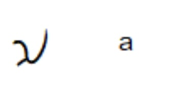
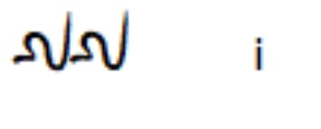
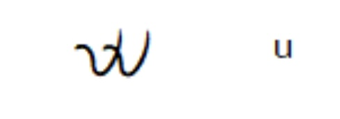

Ámanung Sísuan • Katutubong Bigkas Kulitan
Gabay sa Wastong Pagbigkas ng Kulitan Kapampangan
Tunay na bigkas Kapampangan na may tamang diin at haba (acute ˥), malinis na mga patinig ([a], [e], [i], [o], [u]), at buong tunog sa ngalangala tulad ng [-ŋ] at [-ŋk]. Pakinggan ang katutubong audio, magsanay sa pamamagitan ng 3 ulit na pagsunod sa tunog, o ikumpara sa karaniwang bigkas.
📖 Pagsasanay sa Pagbasa ng Patinig (A • E • I • O • U)
Unang hakbang sa pagbasa tulad sa aralin sa alpabeto: "Ahhh, Ehhh, Ihhh, Ohhh, Uhhh". Sanayin ang hugis ng bibig at tunog bago dumako sa mga pantig.

A a
Tunog: [a] ("Ahhh")
Bukas at maluwang ang bibig
hal. 'ama' / 'aso'

E e
Tunog: [e] ("Ehhh")
Bahagyang nakangiti, purong 'e'
hal. 'ebon' / 'eroplano'

I i
Tunog: [i] ("Ihhh")
Nakangiti, magkalapit ang ngipin
hal. 'ilug' / 'ilong'

O o
Tunog: [o] ("Ohhh")
Naka-pabilog ang mga labi
hal. 'ortelano' / 'oso'

U u
Tunog: [u] ("Uhhh")
Nakasuso, bilog na bilog ang labi
hal. 'uran' / 'ulan'
DALUY NG TUNOG AT FREQUENCY (SPECTRUM)
NAKAHANDA / WALANG TUMUTUNOG
Pangunahing Paraan sa Pagpindot ng Kard: